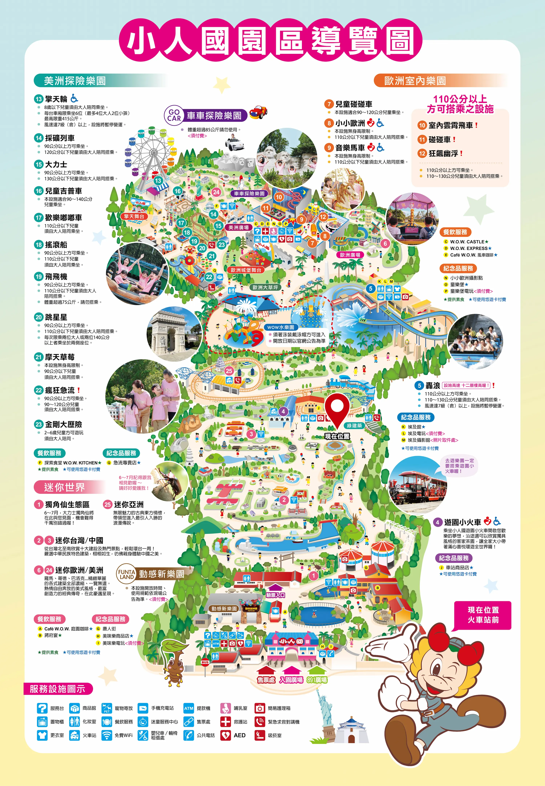

<div class="map-container" id="mapContainer">
  
</div>

<style>
  /* 2. 容器設定：允許手指滑動捲軸 */
  .map-container {
    width: 100%;
    height: 100vh;
    overflow: auto; /* 關鍵：讓地圖可以自由上下左右滑動 */
    position: relative;
    background-color: #fcebd1;
    scroll-behavior: smooth; /* 啟動平滑滑動特效 */
  }

  /* 3. 圖片初始狀態：直接設定為放大尺寸 */
  #park-map {
    width: 250%; /* 控制地圖大小，若覺得不夠大可改為 280% 或 300% */
    max-width: none; 
    display: block;
  }
</style>

<script>
  // 4. 頁面載入後，自動平滑滑動到 Map_K 的指定座標
  window.onload = function() {
    const container = document.getElementById('mapContainer');
    const img = document.getElementById('park-map');

    // 延遲 0.3 秒再開始移動
    setTimeout(function() {
      // 帶入 Map_K「現在位置」(X: 62%, Y: 52%) 的絕對像素座標
      // 並自動扣除螢幕一半的寬高，確保紅點出現在畫面正中央
      const targetX = (img.clientWidth * 0.62) - (container.clientWidth / 2);
      const targetY = (img.clientHeight * 0.52) - (container.clientHeight / 2);

      // 執行平滑捲動
      container.scrollTo({
        left: targetX,
        top: targetY,
        behavior: 'smooth'
      });
    }, 300);
  };
</script>
